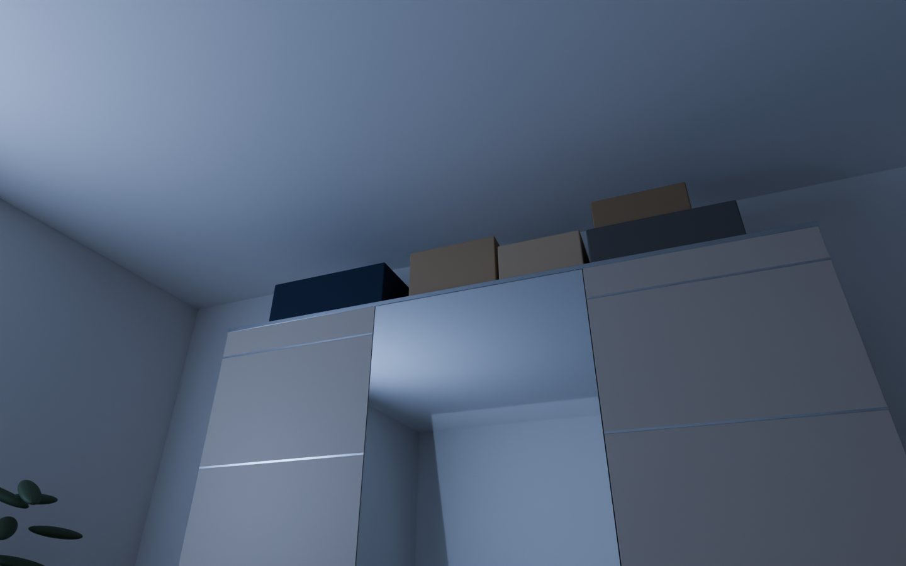
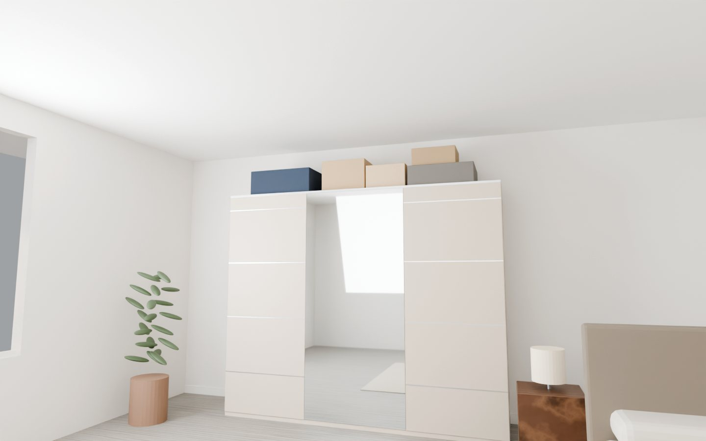
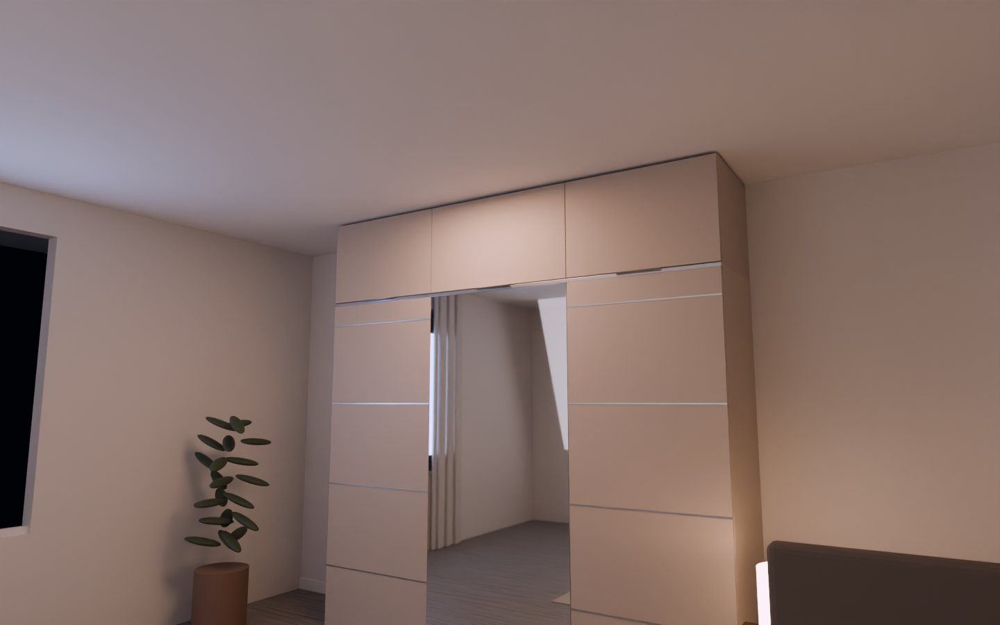

Nem több helyet adunk. Több nyugalmat.
Mert ami a fejünk fölött van, az a fejünkben is ott van.

LátványtervLekapcsolod a villanyt. Még egyszer látod.
A bőröndöt a tavalyi nyaralásról. A dobozt, amit „majd elpakolsz”. A vékony porréteget, amit csak oldalfényben veszel észre. Fél méter, ami minden este ugyanazt mondja: ez még nincs kész.

Látványtervaz fejben is ott van.
Egy szoba sosem lesz nyugodt, ha a legmagasabb pontja zajos. Rendet rakhatsz a polcokon, kivasalhatod az ágyneműt – a szemed mindig felfelé téved.
A fal egyetlen nyugodt felület. Plafonig.
A vonal ott fut, ahol a szekrényed véget ért – és nem áll meg. A szoba hirtelen magasabb lesz. A bőrönd, a téli takaró, az emlékek doboza eltűnik egy ajtó mögött, ami csendben, puhán csukódik be.

LátványtervLekapcsolod a villanyt. És csend van.
Nem látsz semmit, ami dolgod lenne. Csak egy befejezett szobát. Ezt adja a ZENIT: nem egy újabb bútort – hanem azt az érzést, hogy az otthonod végre kész.
„Az otthon akkor kész, amikor már nem keresel rajta semmit.”